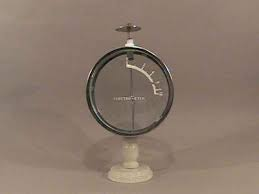
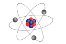
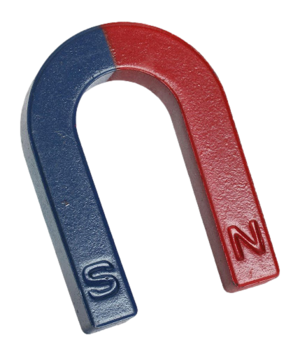

.مواد دارای خاصیت الکتریکی یکسان یکدیگر را دفع میکنند و مواد دارای خاصیت الکتریکی متفاوت یکدیگر را دفع میکنند
.موادی که دارای خاصیت الکتریکی نیستند،به مواد دارای خاصیت الکتریکی از هر نوعی جذب میشود
.آقای استیون گری به سیال بودن خاصیت الکتریکی پی برد و یک مفهوم ابتدایی از رسانایی را پی برد
.و الان ما میدانیم که سرعت انتقال خاصیت الکتریکی در رسانا ها خیلی بیشتر از نارسانا
.یکی از راه های باردار کردن اجسام، مالش دادن است که معمولاً برای اجسام نارسانا انجام میشود؛ البته برای اجسام رسانا هم میتوان انجام داد ولی زود تخلیه میشود
.نظر دیگری که در مورد الکتریسیته و بار ها داده شد را آقای فرانکلین داد؛ او میگفت یک نوع بار الکتریکی وجود دارد که زیاد بود آن را مثبت و کمبود آنرا منفی خواند
و در مورد جذب و دفع بار ها هم نطری داد: بار های مثبت و منفی همدیگر را جذب میکنند تا خنثی شوند زیرا طبیعت دوست دارد اجسام در حالت طبیعی و خنثی باشند و دفع کردن بار های همنام هم به دلیل این است که تجمع بار ها در یک مکان صورت نگیرد
.مواد رسانا به دلیل داشتن الکترون آزا، میتوانند الکتریسیته را به راحتی از خود عبور دهند و مایعات نیز با داشتن یون ها میتوانند عبور دهند
سری الکتریکی
.سری الکتریکی دو سر دارد؛ سر مثبت و سر منفی که سر مثبت آن شیشه و سر منفی آن پلاستیک قرار دارد و برای تشخیص بار دو جسم بعد از مالش دادن استفاده میشود
.اگر جسم در سری بالاتر از جسم دیگر بود در مالش بار مثبت میگیرد و اگر پایین تر بود در مالش بار منفی میگیرد
چرا وقتی دستمان را به واندوگراف میزنیم، موهای تنمان سیخ میشود؟ زیرا ما روی یک جسم نارسانا ایستاده ایم، بار امکان انتقال به زمین را ندارد به همین دلیل در بدن تجمع میکند و در آخر وارد موهایمان میشوند و چون بار موها همنام هستند؛ آنها همدیگر را دفع میکنند
الکتروسکوپ

...الکتروسکوپ چهار کاربرد دارد که آنها را بررسی خواهیم کرد
کاربرد اول: فهمیدن باردار بودن یا نبودن یک جسم:: یک جسم را به کلاهک الکتروسکوپ میزنیم؛ اگر پره ها از هم باز شدند، جسم باردار بوده و اگر پره ها تغییری نکردند، یعنی جسم باردار نبوده است
کاربرد دوم: فهمیدن نوع بار جسم:: اول یک جسم با بار دلخواه را به الکتروسکوپ میزنیم و پره ها باز میشوند. بعد یک جسم دیگر را به کلاهک الکتروسکوپ میزنیم؛ اگر پره ها از هم دور تر شدند میفهمیم که بار جسم با بار جسم دلخواه برابر بوده ولی اگر پره ها ها به هم نزدیک شدند یا کلا بسته شد، یعنی بار جسم مخالف بار جسم دلخواه بوده
کاربرد سوم: فهمیدن رسانایی یا نارسانایی جسم:: جسم مورد نظر را باردار میکنیم و به کلاهک نزدیک میکنیم؛ اگر پره ها باز شدند این جسم رسانا است و اگر پره ها ثابت ماندند، این جسم نارسانا است
کاربرد چهارم: مقایسه میزان بار دو جسم:: اگر الکتروسکوپ مدرج بود که هیچ؛ اگر هم غیر مدرج بود میتوانید جسم اول را به کلاهک الکتروسکوپ بزنید و بعد با ماژیک علامت بزنید و بعد دست خود را به الکتروسکوپ بزنید تا بار آن تخلیه شود (به این موضوع بعداً اشاره خواهد شد) و بعد جسم دوم را به کلاهک الکتروسکوپ بزنید و اندازه بگیرید
بار الکتریکی

.بار الکتریکی خاصیتی است که یعنی از ذرات بنیادی دارای آن هستند
.واحد(یکا) آن کولُن است
.بار یک الکترون خیلی کمتر از یک کلون است
بار یک الکترون
.کوانتیده: بعضی از خاصیت ها به هر میزان میتوانند باشند مثل جرم. یعنی مثلا عدد هایی مثل 19.73 و غیره و به صورت هر عددی دلخواه بالا میروند ولی بعضی دیگر مثل مولوکول های یک جسم دونه دونه زیاد میشوند که به این خاصیت کوانتیده میگویند
.و طبیعتا از طریق مالش تعداد الکترون هایی که جسمی که بار منفی گرفته ، گرفته خیلی کمتر از تعداد الکترون های خود بادکنک است
.و به طور پیش فرض جمع جبری بار ها در یک سیستم عدد صفر است
.اجسام نارسانا از طریق تماس باردار نمیشوند و اگر بشوند خیلی کم میشوند. و در الکترولیت ها ، یون ها باعث رسانایی میشوند
رسانایی و نارسانایی از لحاظ اتمی
.در نارسانا ها اتم ها خیلی خوب و معلمولی کنار هم چیده شدن و در مالش الکترون های سطحی کنده میشوند. اما در رسانا ها بین اتم ها الکترون آزاد وجود دارد که به راحتی حرکت میکنند
یک چیز بدیهی است که الکترون ها(بار های منفی) حرکت میکنند و پروتون ها(بار های مثبت) قابلیت حرکت ندارند ولی در مدار های الکتریکی قرارداد شده است که جهت جریان الکتریکی همان جهت جریان حرکت بار های مثبت باشد؛ به دو دلیل: سادگی محاسبات و سنت آقای فرانکلین
راه های باردار کردن اجسام
.راه اول(مالش دادن): طبق توضیخات قبلی، مالش دادن روشی مرسوم برای باردار کردن اجسام نارسانا است که یکی از اجسام بار مثبت میگیرد و دیگری بار منفی
.روش دوم(تماس): یک جسم باردار را اگر به یک جسم بدون بار تماس بدهیم، ممکن است بار از جسم باردار به جسم بدون بار منتقل شود
در تماس بار ها به صورت مساوی تقسیم میشوند. البته به نسبت سطحشان!
شروط باردار شدن اجسام در راه تماس
تماس جسم رسانای باردار به رسانای بدون بار:برخی از بارها به رسانای بدون بار منتقل میشوند به همان صورت نسبت سطح ها
.تماس جسم نارسانای باردار به نارسانای بدون بار: بار به نارسانای بدون بار منتقل نمشود
.تماس جسم رسانای باردار به نارسانای بدون بار: بار به نارسانا به مقدار خیلی کمی منتقل میشود و به صورت انتقال نیافته حساب میشود
.تماس جسم نارسانای باردار به رسانای بدون بار: برخی از بار ها به رسانا منتقل میشود به نسبت سطحشان
.نکته ای که در رسانا ها وجود دارد این است که بار در رسانا ها روس سطحشان قرار میگیرد
.در اجسامی که قسمت نوک تیز دارند، بار بیشتر در آن قسمت ها قرار میگیرد و هنوز دلیل علمی ای برای این موضوع پیدا نشده است
تا حالا چیزی در مورد آزمایش قفس فارادی شنیده اید؟
.یک فردی یک قفسی طراحی نمود و روی آن را با ورق فلزی پوشاند. و یک فرد دیگری را در قفس قرار میدهند. بار الکتریکی خیلی زیادی را در اطراف قفس طولید میکنند و تمام فضا داشت جرقه میزد و بار ها به قفس برخورد میکردند ولی فرد آسیبی ندید! چون بار روی سطح فلزی قفس در جریان بود (رسانایی فلز)
.روش سوم(القا):نیروی بار الکتریکی بستگی به فاصله و مقدار بار دارد. در روش القا ما یک گوی داریم و یک میله با بار منفی را به آن نزدیک میکنیم مشاهده میکنیم که بار های مثبت سمت میله رفتند و بار های منفی در سمت مخالف بار های مثبت قرار میگیرند و در جسم دو قطب ایجاد میشود که در این حالت به جسم میگویند قطبیده شده است
.روش دوم در القا،القا به کمک زمین است. به این صورت که ما یک میله با بار دلخواه را نزدیک به گوی فلزی میکنیم و بعد یک سیم را از گوی به زمین وصل میکنیم و مشاهدده میکنیم که بار های همنام با بار میله به زمین میروند و بار گوی بار ناهمنام میله میشود زیرا زمین بار را جذب میکند و بار میله هم در معرض دفع است و بار همنام میله به زمین میرود
صاعقه گیر چیست و چگونه کار میکند؟ وقتی رعد و برق میزند، امکان برخورد آن با ساختمانن های بلند وجود دارد به همین دلیل در آن ساختمان ها،صاعقه گیر نصب میکنند تا از خطرات احتمالی جلوگیری کنند. وقتی رعد و برق به صاعقه گیر برخورد کند به دلیل رسانا بودن آن، همه رعد و برق را جذب خود کرده و با خود به زمین میفرستد تا جذب زمین شود
.به این پدیده تخلیه الکتریکی میگویند
.برای حرکت بار ها نیاز به انرژی هست(پتانسیل) یا یک اختلاف پتانسیل برای حرکت
.بار ها زمانی از حرکت میایستند که دیگر نیرویی به آنها وارد نشود(اختلاف پتانسیلی وجود نداشته باشد)
جریان الکتریکی
برای داشتن جریان الکتریکی برای عبور بار ها نیاز به دو عامل است. مسیر مناسب و عامل ایجاد کننده
.شدت جریان هم کمیت دارد که یکای آن آمپر است
.شدت جریان: به میزان باری که در واحد زمان از یک سطح مقطعِ مشخص عبور میکنند، شدت جریان میگویند
.نکته: وجود بقای بار: بار نه به وجود میاد به از بین میرود پس جریان نیز نه به وجود میاد نه از بین میرود
اختلاف پتانسیل: V=E/q
!برای برقراری جریان الکتریکی نیاز به اختلاف پتانسیل است. به باتری بنگرید
.برای ساخت جریان دائمی نیاز به مسیری برای رفت و برگشت و اختلاف پتانسیل(تامین کننده نیرو) است
اختلاف پتانسیل و شدت جریان یک ضریب تناسبی دارند که مقاومت نام گرفته است
مقاومت: R=V/I
.مصرف کننده ها مقاومتی دارند که این مقاومت انرژی باتری هارا میگیرد به دلیل مقاومت است که باتری ها تمام میشوند
.قانون اهم: تناسبی بین شدت جریان عبوری از یک مدار و اختلاف پتانسیل ایجاد شده در یک مدار وجود دارد
.توان: میزان انرژی که مصرف میشود یا آزاد میشود را توان میگویند
توان: P=E/t
وسایل اندازه گیری شدت جریان و اختلاف پتانسیل
.ولت متر: اختلاف پتانسیل بین دو نقطه از مدار را اندازه میگیرد
.آمپر متر: جریان عبوری از بخشی از مدار را اندازه میگیرد
.و برای اینکه کارشان را درست انجام بدهند، نیاز است که درست در مدار نصب شوند و اختلالی در کار مدار ایجاد نکنند
.ولت متر باید مقاومت اش بی نهایت باشد تا بار ها از آن عبور نکنند و بتواند اختلاف پتانسیل بین دو نقطه از مدار را درست اندازه بگیرد
آمپر متر مقاومت اش تقریبا صفر است تا همه جریان وارد آن شود و تمام جریان را اندازه بگیرد(نباید یک الکترون هم در برود!)
نحوه صحیح بسته شدن ولت متر در مدار
نحوه صحیح بسته شدن آمپر متر در مدار
.پدیده اتصال کوتاه: هرگاه دوسر یک باتری با یک سیم رسانا به طوری که مصرف کننده ای در مسیر وجود نداشته باشد، به هم متصل شوند، اتصال کوتاه میگوییم
.در این پدیده سیم به شدت داغ میشود و امکان انفجار نیز وجود دارد
بستن المان ها در مدار
به دو صورت می توان المان هارا در مدار بست. به صورت موازی و به صورت سری
در بستن المان ها به صورت موازی اختلاف پتانسیل سر های موازی با هم برابر هستند ولی شدت جریان آنها متفاوت هستند. ولی در بستن المان ها به صورت سری، شدتن جریان ها یکسان هستند و اختلاف پتانسیل ها متفاوت
مغناطیس

.یکسری مواد میتوانند آهن را جذب کنند
.و در این مواد خاصیت مغناطیسی وجود داره که در دو ناحیه از مواد بیشتر وجود دارد که به آن نواحی قطب می گویند
:آهنربای زمین
تا حالا به نحوه کارکرد قطبنما یا ارتباط بین قطب های جغرافیایی با مغناطیسی شنیده اید؟
است sوقطب جنوب آنها nاست و به دلیل جاذبه و دافعه میان قطب های همنام وناهمنا مدر زمین، قطب شمال آهنرباها s و قطب سمت شمال آن n مواد مذابی که در هسته زمین وجود دارند، خاصیت مغناطیسی دارند به همین دلیل دو قطب دارند که قطب سمت جنوب آنها
.این خاصیت مغناطیسی زمین کاربرد های بسیاری دارد مثل همین قطبنما که میتوانید بقیه خاصیت آنها را از گوگل جستجو کنید
مواد مغناطیسی به دو دوسته تقسیم میشوند. مواد مغناطیسی نرم و سخت
.مواد مغناطیسی نرم: اگر مدتی در یک میدان مغناطیسی قرار داشته باشند، تبدیل به آهنربا می شوند؛ ولی بعد از در آمدن از میدان مغناطیسی خاصیت خود را از دست میدهند
.مواد مغناطیسی سخت: اگر مدت زیادی در میدان مغناطیسی قرار داشته باشند تبدیل به آهنربای دائم میشوند و بعدا= از بیرون رفتن از میدان مغناطیسی خاصیت خود را از دست نمیدهند
تکه کردن آهنربا
خاصیت مغناطیسی آهنربا ها به اتم هایشان بر می گرده پس طبق این اگر یک آهنربا را نصف کنیم به دو تا آهنربا تبدیل می شوند که هر دو دارای دو قطب هستند. و هی نصف کنیم تا به اتم هایشان برسیم
.اتم های یک آهنربا یا مواد قابل تبدیل به آهنربا جهت گیری مغناطیسی دارند و هر کدام به تنهایی یک آهنربا هستند
.و یک آهنربا، تمام یا اکثر جهت گیری اتم هایش یکسان است و نوک جهت گیری آنها شمال و پشتش جنوب است
.و این مواد حوزه هایی دارند که از اتم های یکسان تشکیل شده است که این حوزه ها برایندشان اگه جهتی را نشان می داد و همدیگر را خنثی نمیکردند،یک آهنربا با دو قطب تشکیل میشود
اگر یک جسم که توانایی آهنربا شدن را داشته باشد در معرض میدان مغناطیسی قرار بگیرد حوزه هایش مرتب می شوند و یک آهنربا تشکیل میشود که اگر سخت باشد که دائمی اگر هم جنس جسم نرم باشد به صورت موقت
چگونه آهنربا بسازیم؟
.به 3 روش می توان آهنربا ساخت
روش اوّل: القای مغناطیسی
دلیل جذب شدن آهن به آهنربا، همین القای مغناطیسی هست. آهنربا فقط به آهنربا جذب یا دفع میشود به همین دلیل، آهن باید به آهنربا تبدیل شود تا به آههنربا جذب شود به همین دلیل قطب های آهنربا، جهت گیری مغناطیسی در آهن ایجاد میکنند تا تبدیل به آهنربا شود و جذب آهنربا شود که به این روش القای مغناطیسی میگویند
روش دوم: مالش
.وقتی با حرکت دادن یک آهنربا به روی یک قطعه مغناطیسی به طور مداوم،آن قطعه مغناطیسی آرام آرام تبدیل به آهنربا میشود که به این روش مالش میگویند
.و باید به این نکته توجه کرد که در روش مالش حتما باید در یک جهت مالش بدهیم
سوال: چرا در مواد مغناطیسی نرم دو قطبی ها سریع به هم می ریزند؟
پاسخ: همان طور که جهت های حوزه ها در اثر میدان مغناطیسی سریع تغییر می کند و تبدیل به آهنربا میشوند وقتی از میدان خارج شوند، در اثر دافعه جهت های حوزه ها دوباره سریع به هم میریزند
وقتی یک آهنربا را از وسط بشکنیم، به دو آهنربا تبدیل میشود و اگر آنها را به هم بچسبانیم، دوباره تبدیل به اهنربا میشود ولی ما دو تا قطب شمال و دو تا قطب جنوب داریم ولی در آهنربا از هر یک ، یکی داریم؛ پس چه اتفاقی برای آن دو قطب اضافی افتاده؟
.پاسخ: دو قطب اضافی ان و اس همیدیگر را خنثی کرده اند
راه سوم ساخت آهنربا
.اگر سیمپیچ را به باتری بپیچیم چه اتفاقی میافتد؟ یک میدان مغناطیسی ایجاد میشود که فعلاً مهم نیست چرا! و این ایده اولیه ساخت آهنربای الکتریکی است
تفاوت آهنربای الکتریکی هسته دار و بدون هسته
.آهنربای الکتریکی بدون هسته قدرت کمتری نسبت به هسته دار، دارد و در آهنربای هسته دار، به جز میدان مغناطیسی خود سیم، هسته که مثلاً میتوان از میخ استفاده کرد خب میخ نیز میدان مغناطیسی القا میکند و قدرت بیشتری دارد
.در آهنربای الکتریکی هر چه شدت جریان بیشتر، خاصیت مغناطیسی نیز بیشتر
.در آهنربای الکتریکی هر چه دور سیمپیچ بیشتر، خاصیت مغناطیسی نیز بیشتر
.در آهنربای الکتریکی اگر هسته دار باشد، خاصیت مغناطیسی نیز قوی تر است
شرایط نگهداری آهنربا
.دما بالا نرود. اگر برود جهت گیری ها به هم میخورند
.ضربه نخورد. اگر بخورد جهت گیری ها به هم میخورند
.با قطب های همنام آهنربای دیگر مجاور نباشد. تحت تاثیر دافعه قطب همنام جهت گیری ها به هم میخورند
ساخت آهنربای الکتریکی با استفاده از سرنگ
نور
نور در ادوار مختلف تعریف های مختلفی داشته است مثلاً در زمان نیوتن نور را ذره مینامیدن ولی ذره ای که جرم نداشت و گذشت و گذشت تا امواج الکترومغناطیس دیده شدن که نشون دادن که نور ذره نیست و موج است و الان نیز به این نتیجه رسیدن که نور هم ذره است و هم موج
.(غیر منیر)اجسام به دو دسته تقسیم میشوند. آنهایی که از خود نور دارند(منیر) و آنهایی که از خود نور ندارند
ما اجسام را به خاطر نور میبینیم پس اجسام منیر را به راحتی میتوانیم ببینیم ولی اجسام غیر منیر را چگونه میتوان دید؟
.اجسام غیر منیر نور را بازتاب میکنند تا نور به چشمانمان برسد تا بتوانیم آنها را ببینیم مثل میز
.اجسام یک دسته بندی دیگر نیز دارند اجسام کدر و اجسام شفاف و اجسام نیمه شفاف
باریکه نور
.میزان کمی از نور که برای مطالعه بیشتر پرتو های نور استفاده میشود و از تعدادی پرتوی نور تشکیل شده است
سه نوع باریکه نور وجود دارد
.همگرا: همه پرتو های نور به یک نقطه میرسند
.واگرا: پرتو های نور از یک نقطه به مسیر های مختلف میروند